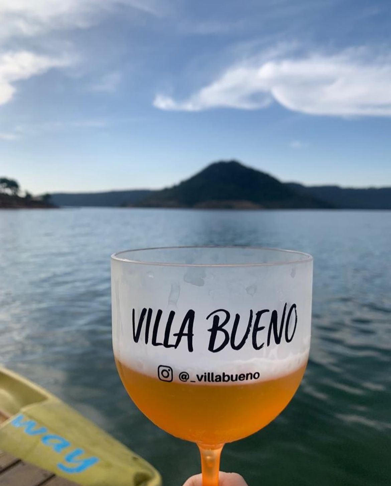

Local selecionado

Villa Bueno
A Villa Bueno é uma chácara privativa em Ribeirão Claro, às margens da Represa Xavantes, perfeita
para famílias e grupos de amigos. Oferece 4 suítes, piscina, espaço gourmet e área externa com
vista para a represa. A locação é exclusiva para um grupo por vez, garantindo privacidade e
conforto.
Avenida 4, 7, Ribeirão Claro - PR, 86410-000.
telefone: (43) 99177-9286.
Faça sua Reserva e Saiba Mais